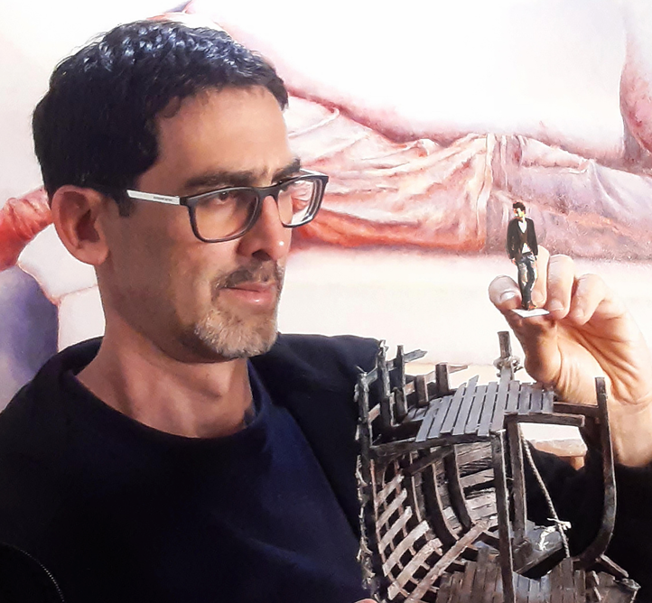

Equipo artístico
Julián Hoyos
Diseño escenográfico
Arquitecto y diseñador escénico, su práctica reúne ópera, teatro, danza y musicales entre Colombia y Estados Unidos.
Ver más
Se formó en Arquitectura en la Universidad de Cornell y cursó una maestría en Diseño Escenográfico en la Universidad de Nueva York (NYU). Desde entonces ha diseñado espacios para teatro, ópera, danza y musicales en Estados Unidos y Colombia.
Su trayectoria incluye colaboraciones con Pittsburgh Opera Center, New Opera NYC, Harvard Art Institute y Repertorio Español. En Colombia ha trabajado con el Teatro Colón, MISI Producciones, L’Explose Danza y el Teatro Nacional.
Junto a Pedro Salazar ha desarrollado las propuestas escenográficas de La flauta mágica, Dido y Eneas, El barbero de Sevilla, Tosca, Las bodas de Fígaro, El castillo de Barbazul y La traviata.